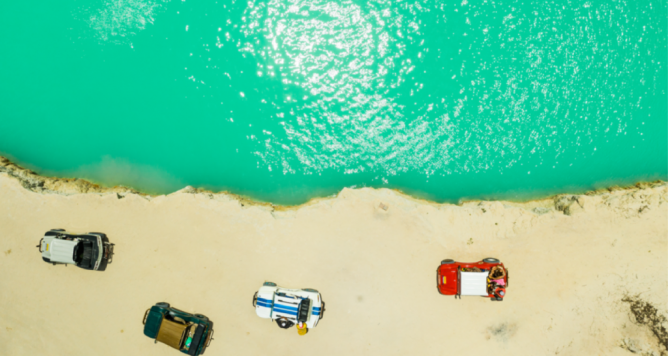

Viagens Nacionais mais procurados em 2023

Maragogi
Maragogi, conhecida como o “Caribe brasileiro” é considerado um dos melhores destinos do nordeste do Brasil. Um lugar paradisíaco, perfeito para quem deseja tirar férias, alguns dias de folga do trabalho e/ou estudos, sair da rotina e descansar na beira do mar enquanto conhece algumas das melhores praias do nosso país. Um lugar de mar calmo e cristalino, com tons que variam entre o verde-esmeralda e azul perfeito para relaxar nas areias das praias e curtir um pôr do sol nesse paraíso com cenário digno de cartão-postal. Maragogi tem clima rústico de vila de pescadores, é perfeita para viagens românticas ou para famílias com crianças. As piscinas naturais cheias de peixes coloridos são convidativas para praticar mergulho. Somos uma plataforma de viagens digital que se especializa em oferecer uma ampla variedade de serviços, desde a reserva de pacotes turísticos até a acomodação em hotéis, passagens aéreas e excursões emocionantes. Nossa abordagem tecnológica visa simplificar a organização de viagens, proporcionando a todos aqueles que sonham em explorar novos destinos uma experiência descomplicada e prazerosa.
Porto de Galinhas
Porto de Galinhas é um distrito da cidade de Ipojuca, no estado de Pernambuco, é considerado um dos melhores destinos do nordeste do Brasil. Maragogi fica a cerca de 100 km de Porto de Galinhas, para quem deseja viver novas aventuras vale a pena se deslocar até lá. É um lugar perfeito para sair da rotina e descansar na beira do mar enquanto conhece algumas das melhores praias do nosso país e mergulha em lindas piscinas naturais. Considerado um dos melhores destinos do litoral do nordeste brasileiro, Porto de Galinhas é um distrito da cidade de Ipojuca, no estado de Pernambuco e fica a cerca de 60 km do aeroporto Guararapes em Recife, a capital do estado. Porto de Galinhas: muitas belezas naturais em Pernambuco!

Porto de Galinhas
Jericoacoara, uma vila de pescadores, charmosa, pequena e rústica do município de Jijoca, a 300 km de Fortaleza, no Ceará, é um dos destinos de praia preferidos do nordeste brasileiro. Um paraíso onde a natureza dá um show, com suas dunas e mangues, perfeito para viajar em janeiro e relaxar nas praias paradisíacas, como a Praia das Conchas, a Praia de Jericoacoara, a Praia Malhada, a Praia do Preá, a Praia Principal e a Praia da Vitória, ou em lagoas de água doce, que variam de tons de azul a verde, como a Lagoa do Coração, o Lago Azul, a Lagoa do Paraíso e a Lagoa da Tatajuba.

Porto de Galinhas
Florianópolis, a capital de Santa Catarina, conhecida como a Ilha da Magia, é um dos destinos mais badalados do sul do Brasil, capaz de agradar públicos variados, como casais, famílias e jovens. Ela oferece inúmeras praias com águas transparentes, lagoas, dunas, trilhas, construções coloniais, sítios arqueológicos, gastronomia deliciosa, bares, restaurantes e baladas, além de ficar próxima de uma das atrações mais procuradas do estado: Beto Carrero World, o melhor Parque Temático da América do Sul. Um ótimo destino para viajar em 2022. Confira as 5 melhores praias de Florianópolis e veja Beto Carrero World: guia completo para aproveitar o parque.